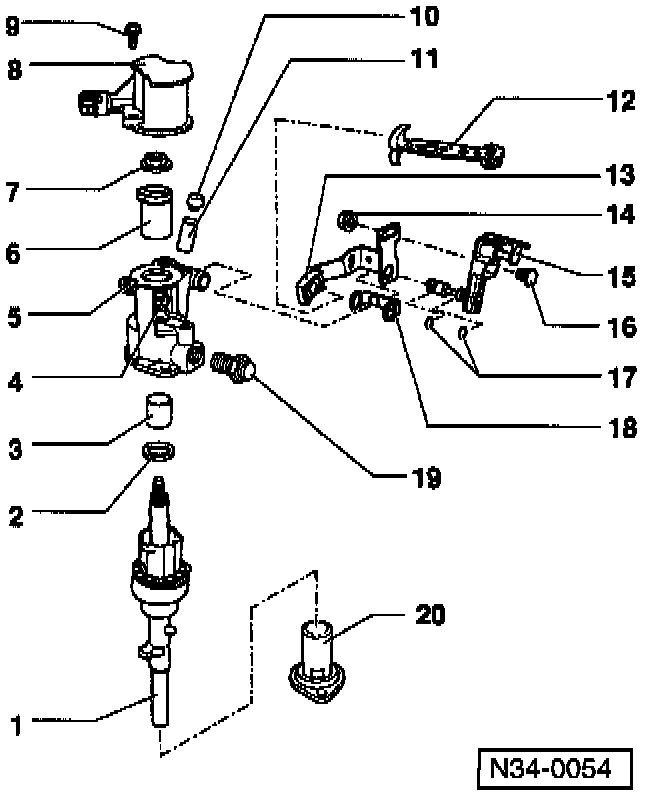
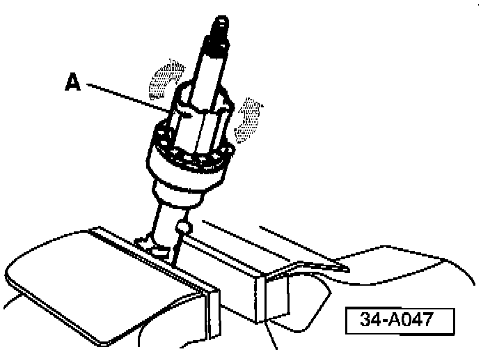
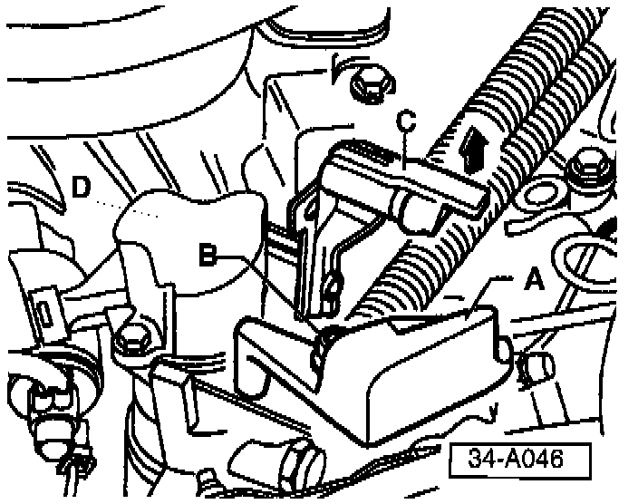

M/T - Pops Out of Gear
Group: 34Number: 97-03
Date: Apr. 11, 1997
Subject:
Transmission Pops Out of Gear, Shifter Feels Like it has a Double Detent When Shifting into gear
Model(s):
Golf, GTI, Jetta w/02A Trans 1996 --> 1997
Passat w/02A, 02C Trans 1996 --> 1997
Condition
Transmission pops out of gear, shifter feels like it has a double detent when shifting into gear, will not maintain shift adjustment.
May be caused by a hairline crack on selector shaft shift detent sleeve which allows sleeve to become dislocated on the selector shaft.
Service
If condition exists, remove external shift controls from the selector shaft/transmission as follows:

- Remove electrical connector from back-up light switch housing.
- Remove nut -B- and balance weight -A- from gear selector cable attachment.
- Remove gear selector cable from gear selector lever.
- Disconnect gate selector cable from actuating arm/relay lever -C- by lifting lug in direction of -arrow-.
- Remove 2 bolts securing back-up light switch housing -D- and remove housing.

- Remove self locking nut -7- and back-up light switch cam sleeve -6-.
- Remove gear shift lever -12-.

- Remove selector shaft housing attachment bolts -arrows- (tap housing lightly with brass or plastic mallet to loosen).
- Remove selector shaft and housing from transmission.
- Remove selector shaft from housing.
Note:
Shaft should slide freely in and out of housing without binding. If shaft binds, housing should be replaced (see Technical Bulletin 34-97-02)

- Clamp selector shaft in a vise (with jaw protectors), then using a pair of pliers try to rotate clamping sleeve -A- on selector shaft.
If sleeve rotates:
- Install new selector shaft
Part No: 02A 301 233F into selector shaft housing (ensure that selector shaft moves freely in housing).
- Remove new selector shaft from housing and install into transmission.
- Install selector shaft housing using sealant AMV 188 200 03 or equivalent.
^ Torque bolts to 25 Nm. (18 ft. lb.).
- Reinstall gear shift lever.
- Reinstall back-up light switch cam sleeve (always use a new self locking nut).
^ Torque nut to 25 Nm. (18 ft. lb.).

- Lift lug -C- in direction of -arrow- and reinstall gate selector cable to actuating arm/relay lever.
- Reconnect gear selector cable to gear selector lever (position cable pivot in center of slot on selector lever).
- Reinstall balance weight -A-.
- Reinstall back-up light switch housing -D-.
- Reinstall back-up light switch electrical connector.
- Road test vehicle.
When procedure applies to vehicles within warranty use the following:
Part Identifier: 3445
Labor Operation: 3445510 90 TU